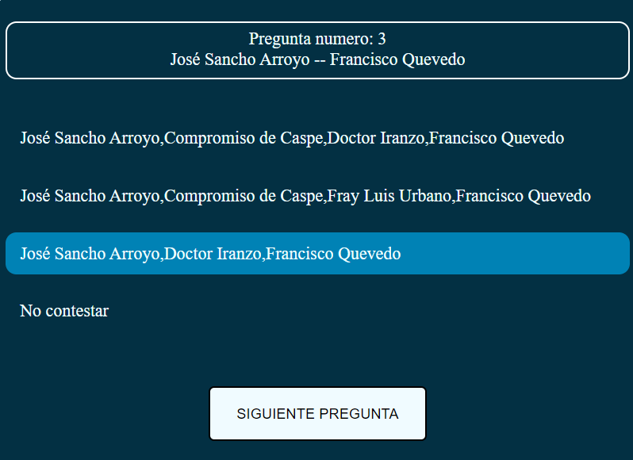

Información
Hola y bienvenidos a mi pagina web. Este curso he comenzado a estudiar el grado de Desarrollo de Aplicaciones Web y me ha resultado muy interesante todo el ecosistema relacionado con este campo. Para adentrarme más he decidido llevar a cabo esta página Web, principalmente para aprender y mejorar mis capacidades relacionadas con HTML Y CSS, en la que ire actualizando toda mi formación y también los proyectos que estoy llevando a cabo de forma autodidacta para mejorar mi nivel.
Proyectos
En esta sección voy a presentar mis proyectos personales, los cuales lo he desarrollado en mi tiempo libre. Para llevar a cabo estos proyectos me he tenido que esforzar en investigar diversos lenguajes nuevos y gracias a esto he adquirido conocimientos y experiencia que podre implementar en mi vida laboral.
Callejero
Este proyecto consiste en un cuestionario de 10 preguntas tipo test con 3 alternativas en la que tendrás que indicar el recorrido válido de una calle origen a un destino, simulando la prueba teórica de las opociciones a bombero para el ayuntamiento de Zaragoza. La finalidad es testear el conocimiento de la malla básica de la ciudad de Zaragoza.
Probar Github